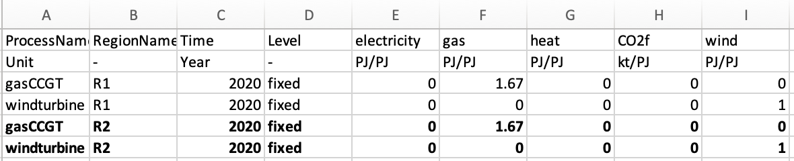
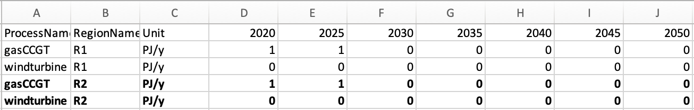
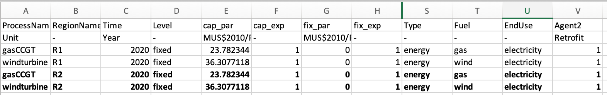
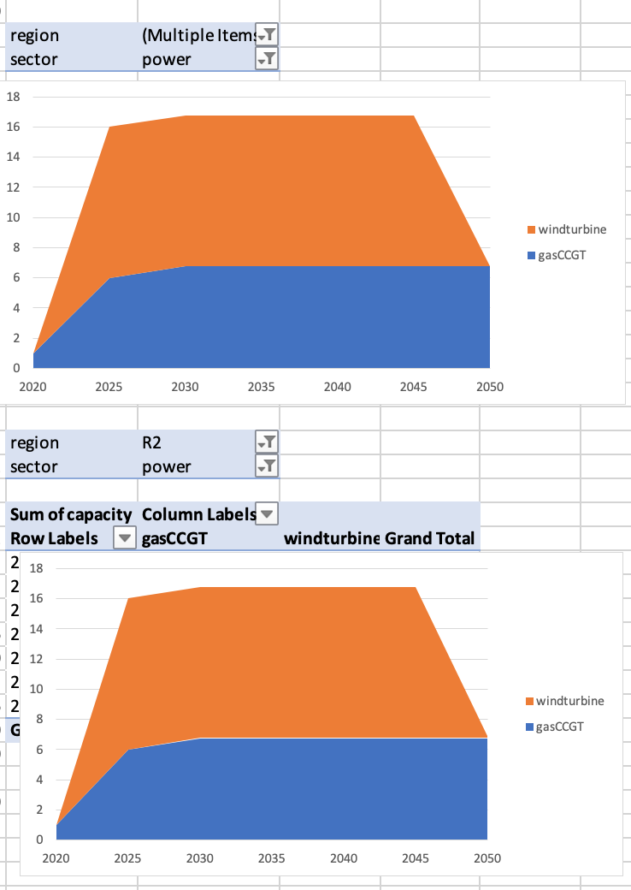

Now we will learn how to add a new region to our example.
The next step is to add a region which we will call R2, however, this could equally be called USA or India. These regions do not have any energy trade. This requires us to undertake a similar process as in the previous hands-on when modifying the input simulation data. However, this time we will also have to change the settings.toml file to achieve this.
The process to change the settings.toml file is relatively simple. We just have to add our new region to the regions variable, in the 4th line of the settings.toml file, like so:
regions = ["R1", "R2"]The process to change the input files, however, takes a bit more time. To achieve this, there must be data for each of the sectors for the new region. This, therefore, requires the modification of every input file.
Due to space constraints, we will not show you how to edit all of the files. However, you can access the modified files at the zenodo link below: https://zenodo.org/record/6327789#.YiI1ri-l1pQ
Effectively, for this example, we will copy and paste the results for each of the input files from region R1, and change the name of the region for the new rows to R2.
However, as we are increasing the demand by adding a region, as well as modifying the costs of technologies, it may be the case that a higher growth in technology is required. For example, there may be no possible solution to meet demand without increasing the windturbine maximum allowed limit. We will therefore increase the allowed limits for windturbine in region R2.
We have placed two examples as to how to edit the power sector below. Again, the edited data are highlighted in bold, with the original data in normal text.
The following file is the modified /technodata/power/CommIn.csv file:

Figure 7.1: Updated CommIn.csv.
Whereas the following file is the modified /technodata/power/ExistingCapacity.csv file:

Figure 7.2: Updated ExistingCapacity.csv.
Below is the reduced /technodata/power/technodata.csv file, showing the new windturbine in R2. For this, we highlight only the elements we changed from the rows in R1. The rest of the elements are the same for R1 as they are for R2.

Figure 7.3: Updated Technodata.csv.
Now, go ahead and amend all of the other input files for each of the sectors, the Agents file and the input files BaseYearExport, BaseYearImport and Projections.csv by copying and pasting the rows from R1 and replacing the RegionName with R2 for the new rows. All of the edited input files can be seen at the zenodo link: https://zenodo.org/record/6327789#.YiI1ri-l1pQ
Again, we will run the results using the python -m pip muse settings.toml in anaconda prompt, and analyse the data using excel as follows:

Figure 7.4: Capacity visualisation for both regions in the power sector - a) Region = R1, b) Region = R2.
In this hands-on we added a new fictional region with the same characteristics for both of these regions. We see that the output of the two regions in the power sector are the same. This is because the characteristics in both regions are identical.